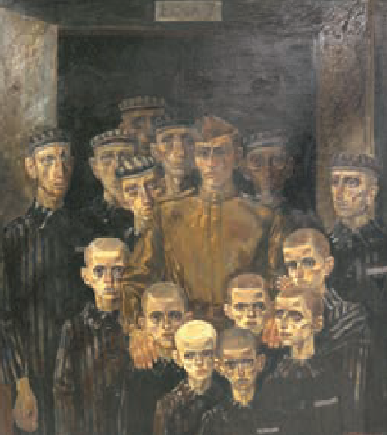

Сохранение памяти
Историческая память
Мир на земле немыслим без исторической памяти.
Таков один из главных тезисов Послания Главы государства А. Г. Лукашенко белорусскому народу и Национальному собранию Республики Беларусь в 2023 году.
Историческая память объединяет современность с прошлым и является основой чувства гордости за героическое прошлое нашей страны и сопереживания трагическим судьбам людей.
Мы всегда должны помнить о том, какой ценой была добыта Великая Победа.
В целях формирования объективного отношения общества к историческому прошлому, сохранения и укрепления единства белорусского народа 2022 год в Беларуси был объявлен Годом исторической памяти.
Местами нашей памяти являются памятники и обелиски, посвящённые событиям Великой Отечественной войны.
Мемориальные комплексы Беларуси Генеральный прокурор Республики Беларусь А. И. Швед на церемонии перезахоронения останков мирных граждан, обнаруженных в ходе осмотра места массового уничтожения и захоронения жертв геноцида в урочище Ивановщина Логойского района9 мая
9 мая в Беларуси ежегодно отмечают один из самых важных праздников в истории страны — День Победы.
Для жителей нашей страны это не только праздничный день, но и день памяти, глубокого уважения и благодарности советским воинам, труженикам тыла, партизанам и под польщикам — всем, кто приближал Победу.
Ежегодно в День Победы 9 мая мы приходим к памятникам, чтобы возложить цветы и почтить у Вечного огня память миллионов людей, погибших во время войны, поблагодарить всех павших за наши мирные рассветы.
22 июня
22 июня в Беларуси в День всенародной памяти жертв Великой Отечественной войны и геноцида белорусского народа память погибших почитают Минутой молчания.
Реконструкция мемориального комплекса «Хатынь»
По поручению Главы государства в мемориальном комплексе «Хатынь» в 2022 году была проведена масштабная реконструкция.
Молодёжь нашей страны не осталась в стороне.
По инициативе и просьбе Белорусского республиканского союза молодёжи мемориальному комплексу «Хатынь» как объекту реконструкции был присвоен статус Всебелорусской молодёжной стройки.
Принять участие в ней смогли юноши и девушки в возрасте 14–31 года.
 Студенческие отряды на Всебелорусской молодёжной стройке по реконструкции мемориального комплекса
«Хатынь». 2022 г.
Студенческие отряды на Всебелорусской молодёжной стройке по реконструкции мемориального комплекса
«Хатынь». 2022 г.
Литература
Память о трагедии белорусского народа в годы Великой Отечественной войны живёт в литературных произведениях.
Свидетельства очевидцев геноцида белорусского народа во время карательных операций против мирного населения сохранились в книге Алеся Адамовича, Янки Брыля и Владимира Колесника «Я з вогненнай вёскі».
Трагедии людей, погибших в лагере смерти «Тростенец», посвящены стихи Владимира Короткевича:
Суайчыннік, стань!
Тут знішчалі людзей.
Суайчыннік!
Запомні навек:
Тры гады па сто трыццаць сем у дзень,
І ў гадзіну — па шэсць чалавек.
Гэта значыць, што кожныя дзесяць хвілін
Тут навекі чарнеў небакрай.
Попел сэрцаў нашых ракоча ў зямлі:
Памятай...
Памятай...
Памятай!!
Другие виды искусства
Монумент «Врата памяти» в мемориальном комплексе «Тростенец»Трагедии белорусского народа в годы Великой Отечественной войны посвящены и произведения других видов искусства.
О карательных операциях нацистов в оккупированной Беларуси режиссёр Элем Климов снял художественный фильм «Иди и смотри».
Главный герой — простой деревенский подросток Флёра становится свидетелем смертей, зверств, насилия и проявления бесчеловечности оккупантов.
Картины белорусского художника Михаила Савицкого из серии «Цифры на сердце» показывают ежедневный ужас, который происходил в лагерях смерти.
Необычной является картина «Эти выжили».
Она выполнена как групповой портрет только что освобождённых узников — бледных и истощённых мужчин, детей.
Образ советского солдата написан в солнечно-золотистых тонах как олицетворение Победы в страшной войне.
 Эти выжили. Художник М. Савицкий. 1987 г.